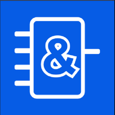

Instalar SimuPLC Lab
Instálalo como una aplicación para abrirlo rápidamente desde tu escritorio o pantalla de inicio.
Preparando el instalador…
Recomendado: abre este enlace con Google Chrome o Microsoft Edge. En iPhone o iPad usa Compartir → Añadir a pantalla de inicio.